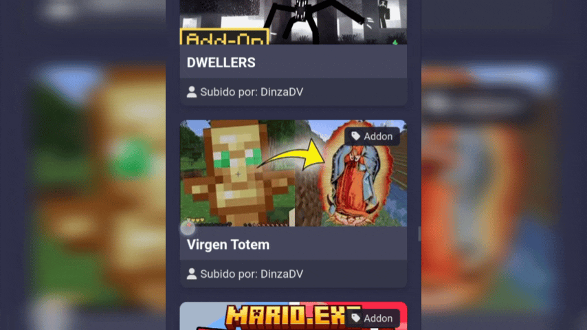
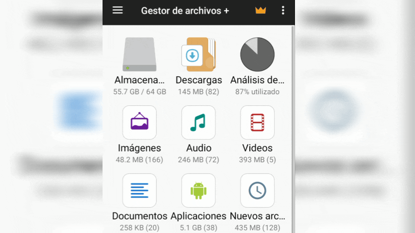

Tutorial: Cómo instalar Addons en Minecraft Bedrock
Paso 1: Descargar el archivo .mcaddon
Descarga el archivo .mcaddon desde la sección de Addons en nuestra página. Asegúrate de guardarlo en una ubicación fácil de encontrar, como la carpeta de Descargas.

Paso 2: Abrir el archivo .mcaddon
Una vez descargado, abre el archivo .mcaddon. Esto debería abrir automáticamente Minecraft Bedrock y comenzar la importación del addon, Si no ocurre eso asegurate que el ".mcaddon" este en el nombre si tiene ".zip" debes darle click a editar nombre y eliminar el ".zip".

Paso 3: Activar el Addon en Minecraft
Dentro de Minecraft, ve a la sección de "Configuración" y luego a "Recursos". Aquí deberías ver el addon que acabas de importar. Actívalo y asegúrate de guardar los cambios.

Paso 4: Disfrutar del Addon
¡Listo! Ahora puedes disfrutar del addon en tu mundo de Minecraft. Asegúrate de que el addon esté activado en cada mundo donde quieras usarlo.